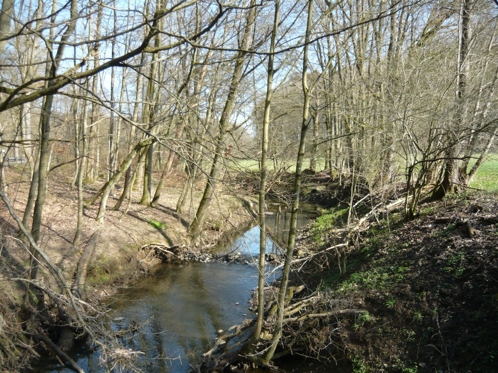
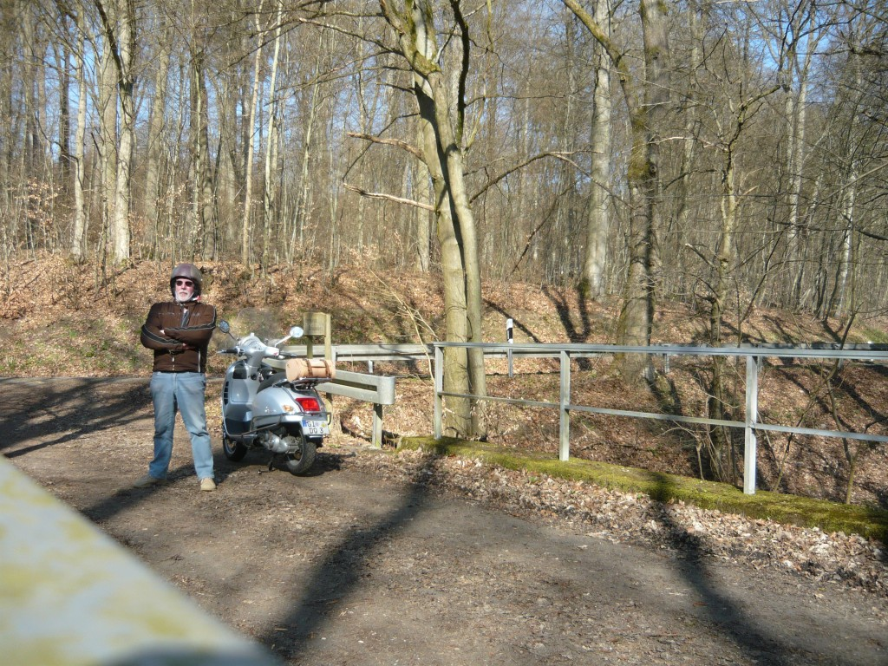
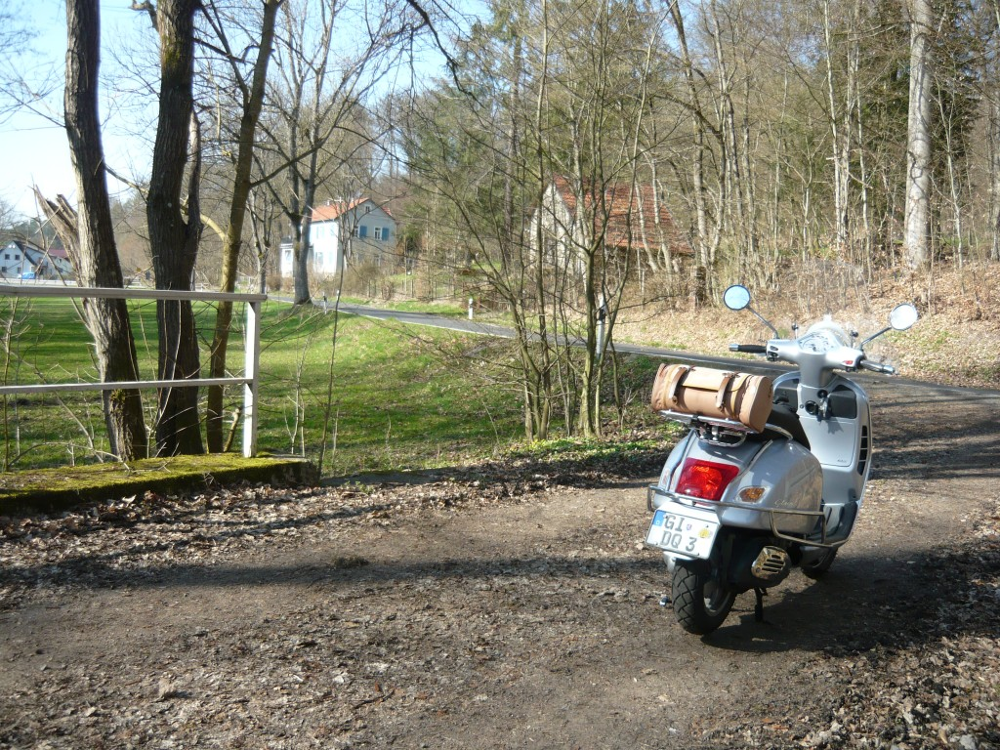
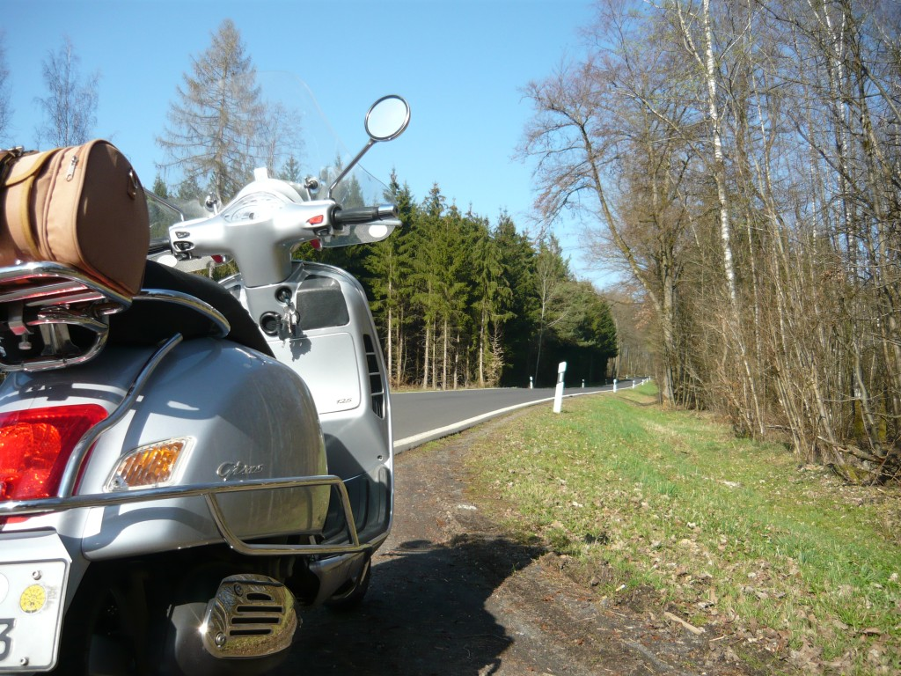
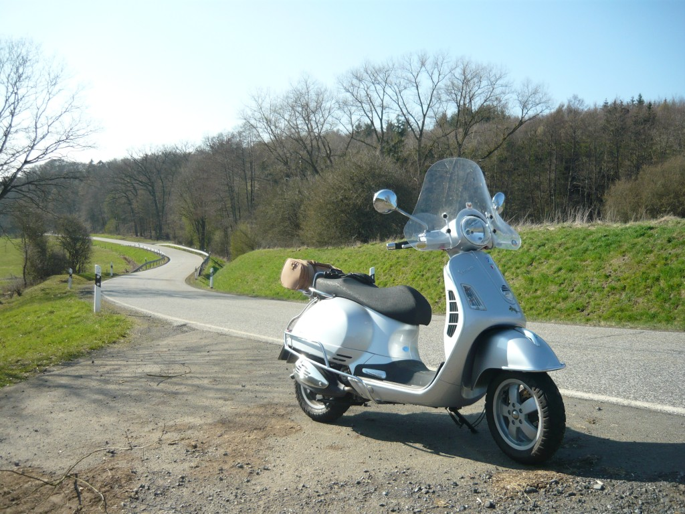
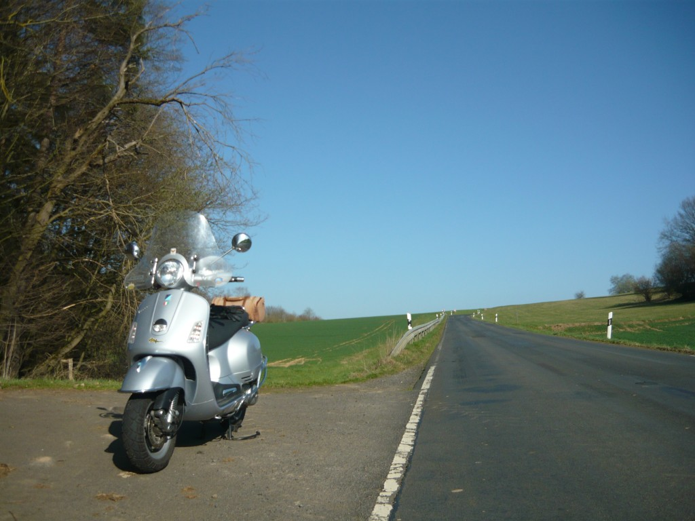
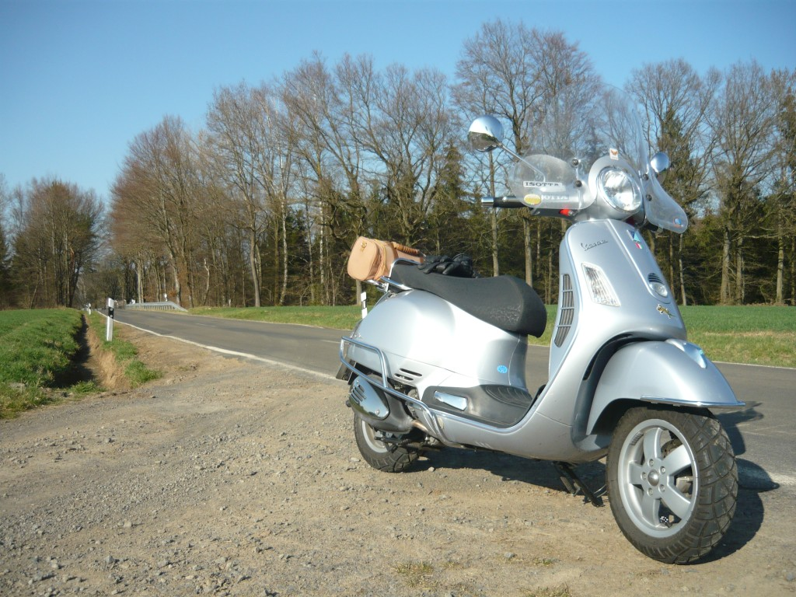
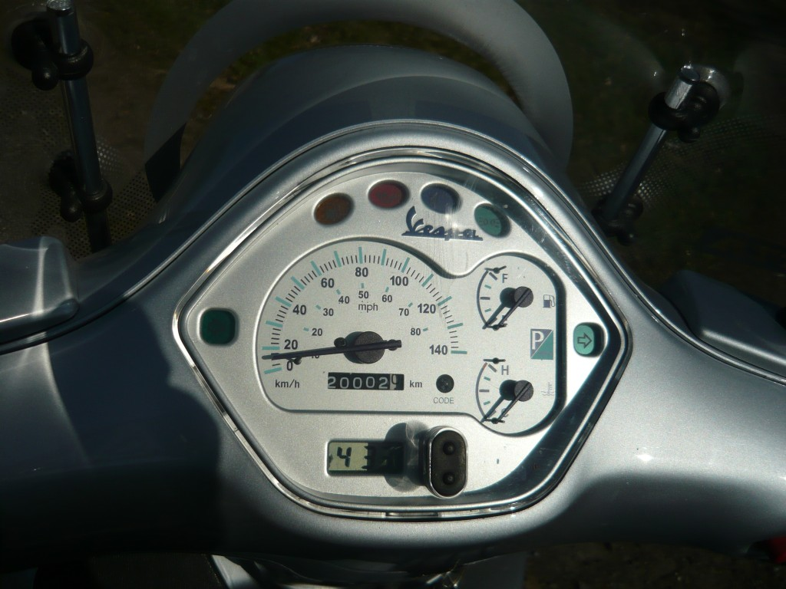

… jawohl, schon wieder fahre ich heute durchs schöne Tal der Horloff.
Und das mache ich nicht nur wegen des charmanten Flüsschens, sondern auch, weil dieser kleine Landstrich fahrerisch einiges zu bieten hat. Und außerdem hab ich einen Einkauf in Hungen zu erledigen.

Die Einkäufe sind flott erledigt und ich kann mich auf den folgenden 80 Kilometern ganz der Horloff widmen:

An Hermanns Brünnchen kontrolliere ich kurz den festen Sitz meiner Brieftasche und dann zeige ich euch, wie schön die Straßen im und ums Horlofftal sind.

Genau hier, nahe dem kleinen Ort Friedrichshütte, wirds so richtig schön.

Ich befahre leicht bewaldete Sraßen wie diese, …..

… oder offene Landschaften wie hier, …

… genieße den strahlend blauen Himmel …..

… und das gaaanz langsam stärker werdende Grünen der Flora.

Und ganz nebenbei knacke ich heute mit der Vespa die 20.000er Grenze. Auf all diesen Kilometern hat mich die kleine Italienerin nicht ein einziges mal im Stich gelassen und ausser Verschleißmaterial musste ich einmal einen Thermostat ersetzen. Damit ist die Vespa quasi genau so robust und zuverlässig wie ein japanisches Mittelklasseauto. Braver Roller!